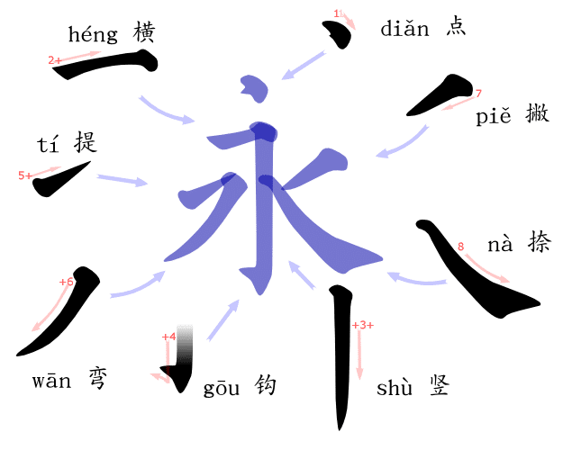

The Character 永 (yǒng) utilizes a variety of stroke types, which you will learn on this page!
Basic Strokes
|
| Chinese Name |
Stroke |
English Name |
Example Characters |
Stroke Direction |
| 1. |
点 diǎn |
丶 |
Dot |
穴 火 点 |
top left to bottom right |
| 2. |
横 héng |
一 |
Horizontal |
一 二 三 兰 |
left to right |
| 3. |
竖 shù |
丨 |
Vertical |
木 刚 旧 |
top to down |
| 4. |
撇 piě |
丿 |
Throw (left-slanting downward) |
大 义 天 |
top to bottom left |
| 5. |
捺 nà |
㇏ |
Press (right-slanting downward) |
人 夫 处 |
top to bottom right |
| 6. |
提 tí |
㇀ |
Lift (upward horizontal) |
地 河 扑 |
bottom left to top right |
Combined Strokes
Many other strokes most of them are combinations or variations of the basic strokes! Here are some commonly
used combination strokes in regular Chinese print kai font:
Combination Strokes: Horizontal
|
| Chinese Name |
Stroke |
English Name |
Example Characters |
Stroke Direction |
| 1. |
横折 héng zhé |
𠃍 |
Horizontal Fold/Break |
书 口 五 |
up to down or left to right |
| 2. |
横钩 héng gōu |
乛 |
Horizontal Hook |
穴 茅 买 |
across and hook |
| 3. |
横撇 héng piě |
㇇ |
Horizontal Throw |
邓 又 叉 |
across to left bottom |
| 4. |
横折钩 héng zhé gōu |
𠃌 |
Horizontal Fold Hook |
为 勾 有 |
across, down, hook |
| 5. |
横折提 héng zhé tí |
㇊ |
Horizontal Fold Lift |
为 勾 有 |
across, down, up to right |
| 6. |
横折弯 héng zhé wān |
㇍ |
Horizontal Fold Curve |
朵 船 没 |
across, down, curve to right |
| 7. |
横折折 héng zhé zhé |
㇅ |
Horizontal Fold x2 |
凹 |
across, down, right |
| 8. |
横斜钩 héng xié gōu |
⺄ |
Horizontal Slant Hook |
飞 风 气 |
across, down, right, down |
| 9. |
横折弯钩 héng zhé wān gōu |
㇈/乙 |
Horizontal Fold Curve Hook |
乙 凡 九 |
across, down, curve to right, hook |
| 10. |
横撇弯钩 héng piě wān gōu |
㇌ |
Horizontal Throw Curve Hook |
陈 邮 部 |
across, throw, curve down, hook |
| 11. |
横折折撇 héng zhé zhé piě |
㇋ |
Horizontal Fold x2 Throw |
陈 邮 部 |
across, fold, fold, throw |
| 12. |
横折折折钩 héng zhé zhé zhé gōu |
𠄎 |
Horizontal Fold x3 hook |
乃 奶 仍 |
across, down, right, down, hook |
| 13. |
横折折折 héng zhé zhé zhé |
㇎ |
Horizontal Fold x3 |
凸 |
across, down, right, down |
Combination Strokes: Vertical
|
| Chinese Name |
Stroke |
English Name |
Example Characters |
Stroke Direction |
| 1. |
竖折 shù zhé |
𠃊 |
Vertical Fold/Break |
亡 山 互 |
down to right |
| 2. |
竖钩 shù gōu |
亅 |
Vertical Hook |
小 水 丁 |
down and hook |
| 3. |
竖提 shù tí |
𠄌 |
Vertical Lift |
凉 以 比 |
down and lift to right |
| 4. |
竖弯 shù wān |
㇄ |
Vertical Curve Hook |
四 西 酉 |
down and curve to right |
| 5. |
竖弯钩 shù wān gōu |
乚 |
Vertical Curve Hook |
扎 花 完 |
down, curve to right, hook |
| 6. |
竖折撇 shù zhé piě |
ㄣ |
Vertical Fold Throw |
专 |
down (left), right, down to left |
| 7. |
竖折折 shù zhé zhé |
𠃑 |
Vertical Fold x2 |
鼎 |
down, right, down |
| 8. |
竖折折钩 shù zhé zhé gōu |
㇉ |
Vertical Fold x2 Hook |
弯 弟 号 |
down, right, down, hook |
| 9. |
撇点 piě diǎn |
𡿨 |
Throw Dot |
女 巡 甾 |
throw to left, dot to right |
| 10. |
撇折 piě zhé |
𠃋 |
Throw Fold |
去 公 玄 |
throw to left, fold to right |
| 11. |
斜钩 xié gōu |
㇂ |
Slant Hook |
戈 我 战 |
curve down to right, hook |
| 12. |
弯钩 wān gōu |
㇁ |
Curved hook |
了 狗 猪 |
curved down, hook |
| 13. |
卧钩 gōu |
㇃ |
Reclining Hook |
心 必 沁 |
curve to bottom right, hook |
Note that there are still more strokes! Some of them are not commonly used or aren't available in text, so
they haven't been included here.